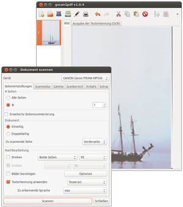
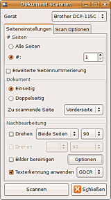
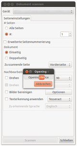
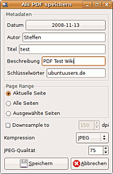

gscan2pdf
Dieser Artikel wurde für die folgenden Ubuntu-Versionen getestet:
Ubuntu 16.04 Xenial Xerus
Ubuntu 14.04 Trusty Tahr
Zum Verständnis dieses Artikels sind folgende Seiten hilfreich:
gscan2pdf  ist ein in Perl geschriebenes Programm, das die Erstellung von PDF und DjVu-Dokumenten sowie vielen weiteren Formaten aus eingescannten Vorlagen ermöglicht. Ähnlich wie bei einem Kopierer kann man Seite für Seite einscannen und dann im gewünschten Format abspeichern. Durch zusätzliche Programme kann gscan2pdf eingescannte Seiten drehen, unschöne Überreste beim Einscannen von Büchern entfernen oder die eingescannten Seiten per OCR mit einer Textebene versehen (nur für PDF und DjVu möglich!).
ist ein in Perl geschriebenes Programm, das die Erstellung von PDF und DjVu-Dokumenten sowie vielen weiteren Formaten aus eingescannten Vorlagen ermöglicht. Ähnlich wie bei einem Kopierer kann man Seite für Seite einscannen und dann im gewünschten Format abspeichern. Durch zusätzliche Programme kann gscan2pdf eingescannte Seiten drehen, unschöne Überreste beim Einscannen von Büchern entfernen oder die eingescannten Seiten per OCR mit einer Textebene versehen (nur für PDF und DjVu möglich!).
Installation¶
gscan2pdf ist in den offiziellen Paketquellen von Ubuntu enthalten. Es müssen folgendes Paket

gscan2pdf (universe)
 mit apturl
mit apturl
Paketliste zum Kopieren:
sudo apt-get install gscan2pdf
sudo aptitude install gscan2pdf
sowie die gewünschten tesseract-ocr-Sprachpakete installiert werden[1]. Nach der Installation kann man gscan2pdf aus dem Startmenü
"Anwendungen -> Grafik -> gscan2pdf"
heraus starten.
Aus einem PPA¶
Adresszeile zum Hinzufügen des PPAs:
ppa:jeffreyratcliffe/ppa
Hinweis!
Zusätzliche Fremdquellen können das System gefährden.
Ein PPA unterstützt nicht zwangsläufig alle Ubuntu-Versionen. Weitere Informationen sind der  PPA-Beschreibung des Eigentümers/Teams jeffreyratcliffe zu entnehmen.
PPA-Beschreibung des Eigentümers/Teams jeffreyratcliffe zu entnehmen.
Damit Pakete aus dem PPA genutzt werden können, müssen die Paketquellen neu eingelesen werden.
Installiert[2] werden muss das Paket
gscan2pdf (ppa)
mit apturl
Paketliste zum Kopieren:
sudo apt-get install gscan2pdf
sudo aptitude install gscan2pdf
Bedienung¶
gscan2pdf wird durch die Schaltflächen über dem Anzeigefenster gesteuert, einige Optionen lassen sich auch nur über die Reiter erreichen, etliche sind auch über Tastenkürzel verwendbar. Für die meisten Funktionen gibt es TipTools, die erscheinen, wenn man den Mauscursor darüber verweilen lässt. Ein  -Klick in Fenster/Seitenleiste öffnet ein Kontextmenü, über das ebenfalls etliche Funktionen erreichbar sind. Das Programm besitzt zudem eine ausführliche Hilfefunktion, leider nur auf englisch.
-Klick in Fenster/Seitenleiste öffnet ein Kontextmenü, über das ebenfalls etliche Funktionen erreichbar sind. Das Programm besitzt zudem eine ausführliche Hilfefunktion, leider nur auf englisch.
Konfiguration¶
Konfigurationseinstellungen können über den Reiter "Bearbeiten -> Einstellungen" erfolgen. Im Fenster "Preferences" (unübersetzt!) lassen sich u.a. Angaben zum zu verwendenden Frontend machen, eine Routine zur Erstellung des PDF-Ausgabenamens festlegen, Werte zur Erkennung leerer bzw. schwarzer Seiten bestimmen und das zu verwendende Temporärverzeichnis festlegen. Außerdem lässt sich festlegen, ob ein neues OCR-Ergebnis das alte ersetzen ("Replace") oder davor ("Prepend") bzw. dahinter ("Append"] eingefügt werden soll. Ebenso kann eine Anwendung zur Weiterverarbeitung des Ergebnisses festgelegt werden (Standard ist GIMP).
Seitenleiste¶
Im Hauptfenster wird links eine Leiste mit Vorschaubildern der zu verarbeitenden Bilddateien angezeigt; dort können einzelne Bilder verschoben oder gelöscht werden. Nach dem Verschieben/Löschen von Seiten verändern sich die Seitenzahlen nicht, jedoch mit der Schaltfläche "Neu nummerieren" lässt sich wieder eine durchgängige Nummerierung herstellen.
Importieren¶
Mit gscan2pdf können bereits existierende Bild-Dateien in den Formaten .jpg, .png, .pnm, .gif, .tif, .tiff, .pdf, .djvu und .ps importiert (dritte Schaltfläche von links bzw "Datei -> Importieren") und weiterverarbeitet werden; es lassen sich auch unterschiedliche Formate gleichzeitig verwenden. Somit kann das Programm auch zum Konvertieren von vorliegenden Daten benutzt werden, da die Ausgabe ebenfalls in diesen Formaten erfolgen kann. Allerdings kommt es beim Import ggf. zu Abstürzen, oder bestimmte Formate (z.B. DjVu-Dateien) werden nicht erkannt. Die importierten Vorlagen können auch mit durch das Programm erstellten Scans kombiniert werden, so lassen sich z.B. vorliegende PDF-Dateien um zusätzliche Seiten erweitern.
Scannen¶
|  |
| Scanoptionen |
Über "Datei -> Scannen" oder das vierte Icon von links wird ein Dialog zum Scannen geöffnet. Je nach dem in den "Preferences" gewähltem Frontend und verfügbarem Backend/Scanner sind unterschiedliche Einstellungen möglich; die umfangreichsten Konfigurationsmöglichkeiten liefert "libsane-perl". Im Auswahlfenster kann man den zu nutzenden Scanner unter "Gerät" auswählen. Falls man einen Einzugsscanner besitzt, kann man hier die Anzahl der zu scannenden Seiten bestimmen. Es lassen sich das Papierformat sowie Scanmodus und Auflösung wählen. Mittels "Scannen" startet man den Scanvorgang.
Seitenauswahl und Nummerierung¶
Wählt man unter Seiteneinstellungen "alle Seiten", werden alle Blätter, die im Einzug liegen, eingescannt. Dies setzt voraus, dass der Scanner in der Lage ist, zu erkennen, wenn alle Vorlagen eingezogen sind. Kann der Scanner dies nicht erkennen, muss man die Anzahl der Vorlagen unter "#" angeben. Tut man dies nicht, wird der Scanner unaufhörlich leere Dateien scannen. Wählt man "#" und im zugehörigen Auswahlfeld die gewünschte Seitenanzahl, wird diese Anzahl eingescannt. Weitere Optionen sind "Einseitig", "Doppelseitig" und "zu scannende Seite" (Auswahl: "Vorderseite, Rückseite"). Diese Optionen bestimmen die Nummerierung der eingescannten Seiten. Hat man einen Duplexscanner, der in der Lage ist, automatisch beide Seiten eines Dokuments zu scannen, werden die Seiten entsprechend der Auswahl unter "zu scannende Seite" nummeriert. Die Nummerierung geschieht hier automatisch, abhängig davon, ob man zuerst "Vorderseite" oder "Rückseite" angibt.
|  |
| Seiteneinstellungen |
Mit Scannern, die nicht automatisch Vorder- und Rückseite scannen können, muss dies manuell gesteuert werden. Man wählt also zuerst die Vorderseite aus und wählt "Scannen". Die im Vorlageneinzug befindlichen Dokumente werden eingescannt und mit z.B. "1, 3, 5" nummeriert. Danach legt man die Vorlagen so ein, dass die Rückseite eingescannt wird, wählt "Rückseite" und wählt abermals "Scannen". Nun werden die Rückseiten eingescannt und mit z.B. "6, 4, 2" nummeriert. gscan2pdf ordnet die Seiten automatisch entsprechend ihrer Nummerierung.
Diese Optionen sind teilweise auch für Flachbettscanner ohne Vorlageneinzug anwendbar. Der Unterschied besteht nur darin, dass man die Vorlagen mit der Hand einlegen und die Scanvorgänge manuell starten muss. Abhängig vom Modell und Treiber ist es auch möglich, die Scanvorgänge mit am Scanner vorhandenen Tasten zu steuern (siehe scanbuttond).
Unter der Option "erweiterte Seitennummerierung" kann man einstellen, wie gscan2pdf die Nummerierung der nächsten Scans gestaltet, basierend auf der Nummerierung der bereits eingescannten Daten. Hat man z.B. keine Daten eingescannt und möchte der nach der ersten Seite (mit Nummerierung 1) folgenden Seite die Nummer "3" geben, stellt man Folgendes ein:
Unter "Start" 1, unter "Erhöhen" 2. Mit Drücken des "Scannen"-Knopfes wird die erste Vorlage eingescannt (bei Flachbettscannern ohne Vorlageneinzug muss dies entsprechend manuell gesteuert werden) und erhält die Nummerierung 1. In der Box "Start" steht automatisch "3" für die nächste Seite. Will man der auf Nummerierung 3 folgenden Seite die Nummerierung "2" geben, stellt man nun unter "Erhöhen" -1 ein, nachdem man die erste Vorlage eingescannt hat. Die der zweiten Seite (Nummerierung "3") folgende Seite erhält nun die Nummer 2 und wird dieser Nummerierung entsprechend angeordnet.
Scanbereich¶
Der Scanbereich kann individuell festgelegt werden, unter der etwas irreführenden Bezeichnung "Anleitung" lassen sich die Seitenränder auch manuell festlegen. Über "Bearbeiten -> Hinzufügen" können eigene Formate definiert werden, die dann im Dropdownmenü mit aufgeführt werden. Falls das Format für den verwendeten Scanner zu groß ist, wird eine Warnung angezeigt; die vorhandenen Einträge lassen sich auch individuell umbenennen und anpassen ( -Klick in den jeweiligen Wert ermöglicht das Editieren).
-Klick in den jeweiligen Wert ermöglicht das Editieren).
In den Einstellungen zur "Nachbearbeitung" können Ränder, Ausrichtungen etc. eingestellt werden. Hier können z.B. Optionen zur Texterkennung eingestellt werden, sowie weitere Optionen zur Nachbearbeitung. Man kann somit bestimmte Optionen wie "Drehen" oder "Bereinigen"" direkt auswählen.
Werkzeuge¶
Unter "Werkzeuge" finden sich einige Funktionen, um die Scans vor dem Speichern zu verbessern. So kann ein Schwellwert für schwarz-weiß eingescannte Vorlagen verwendet werden, außerdem kann man das Bild "Invertieren" (ein Negativ erstellen), eine einfache Unschärfe-Maske lässt sich einsetzen, und die Scans können auf das gewünschte Maß zugeschnitten werden. Diese Funktionen lassen sich für alle oder die jeweils ausgewählte Seite verwenden.
Bereinigen¶
gscan2pdf setzt zum "Bereinigen" unpaper ein, ein sehr mächtiges Nachbearbeitungs-Werkzeug für die Aufbereitung eingescannter Daten. Mit unpaper können typische Fehler, wie sie beim Scannen von Buchseiten usw. auftreten, beseitigt werden. Das Programm entfernt z.B. schwarze Flecken oder Ränder und richtet den Text nach den Vorgaben aus, die der Benutzer in den Einstellungen gemacht hat. Bei schief eingescannten Vorlagen wird der Text auch in einem gewissen Maß gerade gerückt. Damit ist eine bessere Texterkennung möglich und die resultierenden Bilder müssen nicht manuell gerade gerückt werden. Die vielfältigen Einstellungsmöglichkeiten sind im unpaper-Fenster in den Reitern "Entzerren", "Rand" und "Filter" einstellbar, weitere Details dazu finden sich im Artikel unpaper.
Unmittelbar nach dem Scannen wird unpaper (wenn im Scan-Dialog "Bilder bereinigen" ausgewählt wurde) gestartet, es erscheint eine kleine Box mit Fortschrittsbalken.
Texterkennung (OCR)¶
Verwendbar sind die Texterkennungsprogramme, GOCR, tesseract-ocr sowie Cuneiform-Linux, mit letzteren können durch die Verwendung von hOCR-Dateien auch direkt "positional" durchsuchbare PDF- und DjVu-Dokumente mit integrierter Textebene erstellt werden können.
Im Scanner-Einstellungsdialog lassen sich die entsprechenden Angaben zum Texterkennungsprogramm und ggf. der zu verwendenden Sprache machen. So lassen sich in einem Dokument auch unterschiedliche Texterkennungsprogramme verwenden; ggf. sinnvoll, wenn z.T. Tabellen verarbeitet werden sollen, die z.B. Cuneiform nicht erkennt, aber über tesseract einlesbar sind. Die Texterkennung startet (wenn vorher mit "Texterkennung anwenden" ausgewählt) direkt im Anschluss an den Scan- bzw. unpaper-Prozess. Der erkannte Text wird im Reiter "OCR-Output" unterhalb des eingescannten Bildes angezeigt und kann dort auch korrigiert werden. Durch "Datei -> Speichern -> Bildformat -> Text" wird die OCR-Ausgabe als txt-Datei abgespeichert. Die Absatzzeichen am Ende jeder Zeile können mit einem Editor durch Leerzeichen ersetzt werden (in LibreOffice Writer z.B. über "Bearbeiten -> Suchen&Ersetzen -> mehr Optionen -> regulärer Ausdruck", $ steht für das Absatzzeichen).
Die Qualität der Texterkennung hängt stark von den Eigenschaften der Vorlagen ab, insofern ist ggf. sinnvoll, schon beim Scan einen angepassten Schwellwert/Gammawert zu verwenden, oder die weiteren Werkzeuge wie "Unschärfe-Maske" einzusetzen. Außerdem gibt es große Qualitätsunterschiede zwischen den einsetzbaren OCR-Programmen (GOCR schneidet dabei in der Regel am weitaus schlechtesten ab).
Die Werkzeuge "Bereinigen" und "Texterkennung" lassen sich auch später oder erneut mit anderen Einstellungen auf das gesamte Dokument anwenden, es ist auch möglich, nur unpaper oder nur die Texterkennung zu benutzen.
Korrekturen können direkt im OCR-Ausgabefenster erstellt werden, mit einem -Klick in eine Box öffnet sich ein Editorfenster, in dem die Korrekturen vorgenommen werden können. Unter Version 1.0.6 ist diese Funktion allerdings defekt, kann aber wieder verwendet werden, wenn in der Datei /usr/bin/gscan2pdf in einem Editor mit Root-Rechten die Zeile
$main::d->get('Editing text') . "...", $main::window,durch
$d->get('Editing text') . "...", $main::window,ersetzt wird (siehe diesen Eintrag in der gscan2pdf-Mailinglist).
Hinweis:
tesseract-ocr 3.0x ist verwendbar, wenn sowohl die alten Sprachpakete als auch die entsprechenden neuen [langid].traineddata-Dateien vorhanden sind; ab Version 1.0.6 ist tesseract 3.0x der Standard.
Speichern¶
|  |
| Als PDF abspeichern |
Über "Datei -> Speichern" bzw. das fünfte Icon von links lassen sich alle eingescannten Seiten sichern. Möglich sind die Formate .pdf .gif .jpeg .png, .pnm, .ps, .tiff und .djvu. Zudem kann, wenn eine Texterkennung durchgeführt wurde, auch der reine "Text" gespeichert werden. Außerdem kann die derzeitige "Sitzung" exportiert werden, um z.B. eine noch nicht fertiggestellte Bearbeitung später weiterführen zu können (über "Datei -> Öffnen" lassen sich derartige Sitzungen wieder aufrufen).
Standard ist das PDF-Format, dafür können zusätzlich verschiedene Metadaten angegeben werden, die mit dem Dokument gespeichert werden. Wählt man "PDF", öffnet sich ein Eingabefenster, in das man Metadaten zum zu erzeugenden PDF eingeben und auswählen kann, ob sich das Speichern auf alle Seiten, die aktuelle Seite oder ausgewählte Seiten beziehen soll. Die Seiten werden dann entsprechend ihrer Nummerierung (siehe oben) im PDF angeordnet. Man kann auch Optionen zur Qualität des Bildes und Kompressionsarten einstellen (letzteres ist auch für die Formate jpeg, tiff und ps möglich).
Es gibt auch die Möglichkeit, mehrseitige Dokumente im DjVu-Format abzuspeichern. DjVu benötigt bei besserer Qualität deutlich weniger Speicherplatz. Zum Vergleich: Aus einer eingescannten A4-Seite im Scanmodus "Lineart 300 dpi" (für Texte völlig ausreichend) wird eine PDF-Datei mit der LZW-Kompression (PNG geht auch) erzeugt, die ca. 150-180 KB groß ist. Dieselbe Seite im DjVu-Format abgespeichert benötigt ca. 70 KB und ist deutlich besser lesbar. Evince kann mit DjVu-Dateien problemlos umgehen, ebenso Okular, wenn das Paket okular-extra-backends installiert ist (siehe auch DjVu/Programme).
Mit gscan2pdf lassen sich so auch DjVu-Dateien ins PDF-Format konvertieren, ohne den sonst meist üblichen vollständigen Verlust der Textebene. Allerdings muss die Texterkennung erneut durchgeführt werden, das Programm ist momentan nicht in der Lage, die Textebene aus den DjVu-Daten direkt zu extrahieren. Bei guten schwarzweißen DjVu-Vorlagen ist das kein großes Problem, die Textpassung für die PDF-Dateien ist bei gscan2pdf meist sehr exakt; bei farbigen Vorlagen wird es ungleich schwieriger.
Hat man die Einstellungen abgeschlossen, drückt man "Speichern" und es öffnet sich z.B. der normale Speicher-Dialog von Nautilus. Man kann nun den gewünschten Dateinamen eingeben und auswählen, wo die Datei gespeichert werden soll.
Problembehandlung¶
Falls das Abspeichern nicht funktionieren sollte (Fortschrittsbalken bleibt hängen, siehe Bug 424249), hilft es, unter "Bearbeiten -> Einstellungen" das Frontend zu "scanimage-perl" zu ändern und gscan2pdf neu zu starten.
Es kann vorkommen, dass sich eine gerade erstellte PDF-Datei nicht öffnen lässt. Hier hilft es, die Kompressionsart im Eingabefenster für die Metadaten umzustellen. Mit "JPG" oder "PNG" statt "LZW" wird die Datei korrekt erzeugt.
Verwendung von Tesseract scheitert unter 14.04¶
Um die in Ubuntu 14.04 verwendete Version von Tesseract für die Texterkennung nutzen zu können, muss in der Datei /usr/share/perl5/Gscan2pdf/Tesseract.pm in einem Editor mit Rootrechten in Zeile 189 das .html duch .hocr ersetzt werden. Tesseract verwendet in Version 3.0.3 als Standarderweiterung für hocr-Dateien nicht mehr .html sondern .hocr.
Standard-PDF-Name beginnt mit Leerstelle¶
Wenn man die Standardeinstellungen ohne weitere Metadatei-Angaben zum Abspeichern von PDF-Dateien nutzt, wird die Datei nach dem Muster Jahr-Monat-Tag (yyyy-mm-dd.pdf) abgespeichert, allerdings mit einer führenden Leerstelle. Das kann beim Aufruf z.B. auf der Kommandozeile zu Schwierigkeiten führen. Abhilfe schafft es, die Benennungsroutine in den "Preferences" zu ändern. Sinnvoll ist es ggf. auch, darauf zu achten, dass bei der Namenserstellung auch innerhalb keine Leerstelle verwendet wird, das könnte beim Aufruf der Dateien zu Problemen führen.
OCR-Editor-Fenster zu gro߶
Wenn man einen mit GOCR oder tesseract-ocr erstellten Text korrigieren möchte, kann der Editor, in dem der Text bearbeitet werden soll, ggf. größer dargestellt werden, als das Display es zulässt. Um den Text im unteren Teil trotzdem zu erreichen und die Änderungen mit dem nötigen -Klick auf die "OK"-Schaltfläche ganz unten im Editor-Rahmen abspeichern zu können, kann man das Fenster bei gedrückter
Alt -Taste mit gedrückter -Taste ziehen, um die Schaltfläche erreichen zu können.
Import von djvu-Dokumenten scheitert¶
Selbst von gscan2pdf selbst erstellte DjVu-Dateien lassen sich nicht importieren, es erscheint eine Fehlermeldung, dass die Dateistruktur nicht erkannt werden könne. Der Fehler ist dem Entwickler bereits gemeldet, und tritt in Version 1.x.x nicht mehr auf.
Fehlende Erkennung bei Cuneiform¶
Bei der Verwendung von Cuneiform kommt es zu Problemen, wenn Texte mit kursiv oder fett formatierten Zeichen verwendet werden sollen. Cuneiform selbst kann diese Zeichen erkennen, allerdings werden sie aufgrund eines Problems bei der Bearbeitung der von Cuneiform erzeugten hOCR-Dateien in gscan2pdf nicht weiterverarbeitet. Zeilen mit derartigen Zeichen werden für die Texterkennung nicht oder nur teilweise berücksichtigt; der Fehler soll aber demnächst behoben werden, ist aber in Version 1.2.0 leider immernoch vorhanden.
Tastenkürzel¶
| gscan2pdf-Tasten | ||||
| Taste(n) | Funktion | Taste(n) | Funktion | |
| Strg + N | Neu | Strg + V | Einfügen | |
| Strg + O | Öffnen | Strg + R | Neu nummerieren | |
| Strg + I | Importieren | Strg + A | Auswählen: Alle | |
| Strg + G | Scannen | Strg + 1 | Auswählen: Ungerade | |
| Strg + S | Speichern | Strg + 2 | Auswählen: Gerade | |
| Strg + E | Als PDF per E-Mail versenden | Strg + B | Auswählen: Leere | |
| Strg + H | Hilfe | Strg + D | Auswählen: Dunkel | |
| Strg + P | Strg + M | Auswählen: Modified | ||
| Strg + Q | Beenden | + | Vergrößern | |
| Strg + Z | Rückgängig | - | Verkleinern | |
| ⇧ + Strg + Z | Wiederherstellen | ⇧ + Strg + R | 90° drehen (rechts) | |
| Strg + X | Ausschneiden | ⇧ + Strg + F | 180 ° drehen | |
| Strg + C | Kopieren | ⇧ + Strg + C | 90° drehen (links) | |
Alternativen¶
pct-scanner-script ist eine vollwertige Alternative für die Kommandozeile, um (auch mehrseitige) PDF- und DjVu-Dateien zu erstellen. Die Encodierung der DjVu-Daten kann dabei über didjvu erfolgen, sodass segmentierte Dateien mit der bitonalen Ebene zur Verarbeitung mit einem Texterkennungsprogramm möglich sind. Dazu kann ocrodjvu automatisch verwendet werden, eine Korrektur der Textebene ist allerdings nicht vorgesehen.
xsane2djvu ist ein Wrapper, um direkt aus XSane heraus DjVu-Dateien mit einer integrierten Texterkennung zu erstellen. Es sind dabei ein- oder mehrseitige Dokumente möglich, zur Encodierung können verschiedene Programme genutzt werden. Insbesondere bei der Erstellung farbiger DjVu-Dokumente ist die Größenersparnis immens, das Verhältnis kann 1:10 gegenüber den von gscan2pdf erzeugten DjVu-Dateien betragen. Auch hier ist eine Korrektur der Textebene erst im Nachhinein (z.B. über djvusmooth) möglich.
pdfsandwich kann aus PDF-Dokumenten und über tesseract-ocr erstellte hOCR-Dateien "durchsuchbare" PDFs wie gscan2pdf erstellen, auch pdfocr kann dazu verwendet werden. Beide Programme können allerdings selbst keine Dokumente erstellen, sondern nur bereits vorliegende Dateien verarbeiten, eine Korrektur der Texterkennung ist ebenfalls nicht vorgesehen.
djvubind ist ein Kommandozeilenprogramm, mit dem aus .tiff-Vorlagen DjVu-Dokumente (z.B. als E-Books) erstellt werden können. Das Programm kann allerdings momentan nur schwarz-weiße .tiff-Dateien verarbeiten (z.B. Scan Tailor-Ausgaben); die Texterkennung erfolgt standardmäßig mit tesseract-ocr.
- Erstellt mit Inyoka
-
 2004 – 2017 ubuntuusers.de • Einige Rechte vorbehalten
2004 – 2017 ubuntuusers.de • Einige Rechte vorbehalten
Lizenz • Kontakt • Datenschutz • Impressum • Serverstatus -
Serverhousing gespendet von